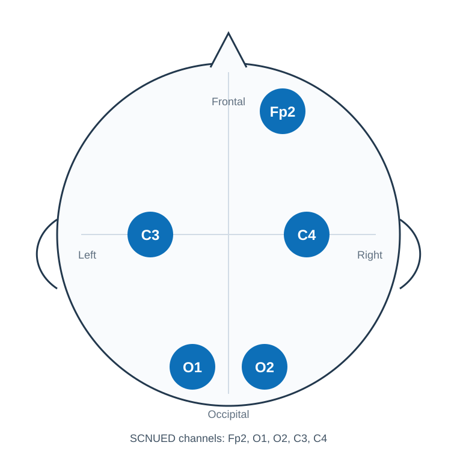

Dataset Description
SCNUED records low-channel wearable EEG during passive audiovisual emotion induction. EEG signals were acquired with a five-channel portable EEG headband after conductive gel application and signal-quality checks.
| Institution | South China Normal University |
|---|---|
| Laboratory | Brain-Computer Interface and Hybrid Intelligence Laboratory, South China Normal University 华南师范大学脑机接口与混合智能实验室 |
| Channels | Fp2, O1, O2, C3, C4 |
| Sampling frequency | 250 Hz for EEG channels |
| Unit | uV |
| Format | De-identified raw BDF |

Data Acquisition Flow

Stimulus Clips
The source clips are described for reproducibility but are not redistributed with the dataset.
| No. | Emotion | Source clip |
|---|---|---|
| 1 | Positive | Flirting Scholar |
| 2 | Positive | Just Another Pandora's Box |
| 3 | Neutral | Aerial China, Episode 1 |
| 4 | Neutral | Aerial China, Episode 2 |
| 5 | Negative | Back to 1942 |
| 6 | Negative | Tangshan Earthquake |
Data Organization
SCNUED-v1.0/
SCNUED-v1.0_manifest.tsv
sub01/sub01_session1.bdf
sub01/sub01_session2.bdf
...
sub15/sub15_session1.bdf
sub15/sub15_session2.bdfNo event files are released in v1.0 because the BDF annotation channels do not contain validated nonnumeric event labels.
Quality Notes
Release BDF headers are de-identified by rewriting patient, recording, date, and time fields. EEG data records remain unchanged, and the manifest confirms identical post-header data hashes.
- All released BDF files contain the five EEG channels
Fp2,O1,O2,C3, andC4at 250 Hz. - Source filenames are consistent with their source folders in this release.
- Participant-level age and sex tables are not released in v1.0; only aggregate demographics are provided.